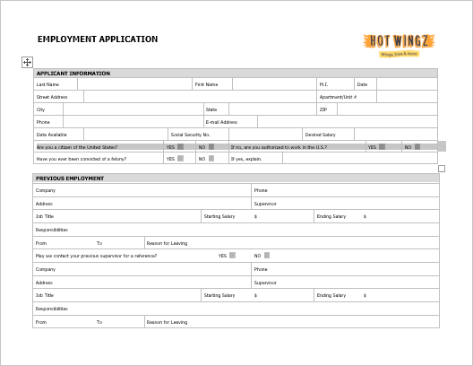
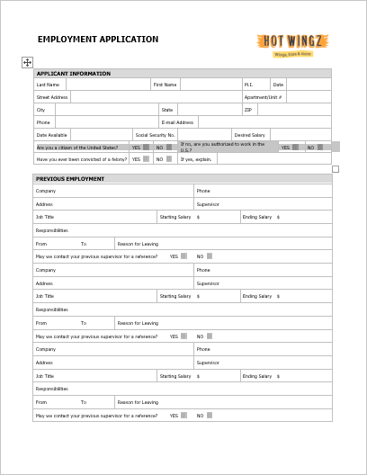
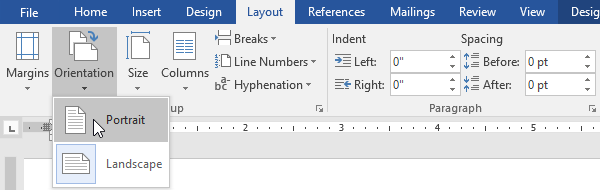
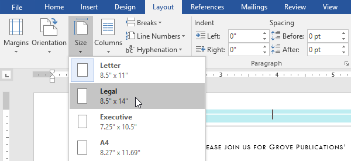
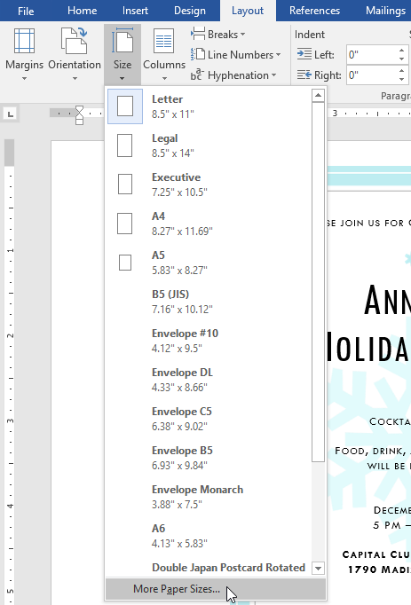
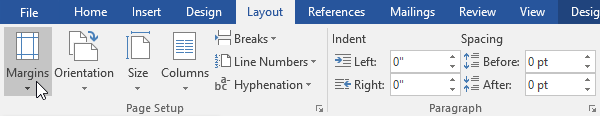
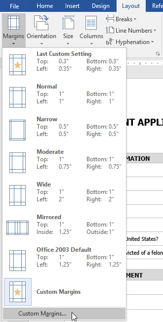
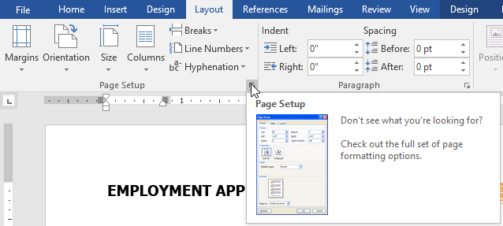
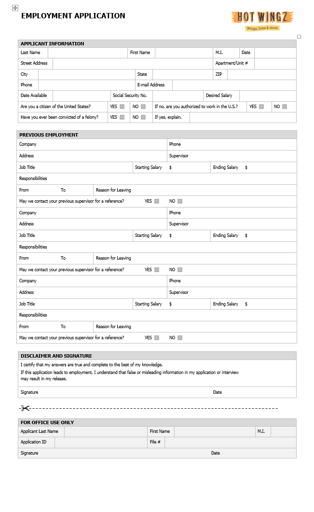

Lesson 12: page-layout
Lesson 12: Page Layout
/en/word/links/content/
Introduction
Word offers a variety of page layout and formatting options that affect how content appears on the page. You can customize the page orientation, paper size, and page margins depending on how you want your document to appear.
Watch the video below to learn more about page layout in Word.
[](../../../../../www.youtube.com/embed/jgNpoksYOLE.webm)
Page orientation
Word offers two page orientation options: landscape and portrait. Compare our example below to see how orientation can affect the appearance and spacing of text and images.
- Landscape means the page is oriented horizontally.

* Portrait means the page is oriented vertically.
To change page orientation:
- Select the Layout tab.
- Click the Orientation command in the Page Setup group.
 3. A drop-down menu will appear. Click either Portrait or Landscape to change the page orientation.
3. A drop-down menu will appear. Click either Portrait or Landscape to change the page orientation.

4. The page orientation of the document will be changed.Page size
By default, the page size of a new document is 8.5 inches by 11 inches. Depending on your project, you may need to adjust your document's page size. It's important to note that before modifying the default page size, you should check to see which page sizes your printer can accommodate.
To change the page size:
Word has a variety of predefined page sizes to choose from.
- Select the Layout tab, then click the Size command.
 2. A drop-down menu will appear. The current page size is highlighted. Click the desired predefined page size.
2. A drop-down menu will appear. The current page size is highlighted. Click the desired predefined page size.

3. The page size of the document will be changed.To use a custom page size:
Word also allows you to customize the page size in the Page Setup dialog box.
- From the Layout tab, click Size. Select More Paper Sizes from the drop-down menu.

2. The Page Setup dialog box will appear. 3. Adjust the values for Width and Height, then click OK. 4. The page size of the document will be changed.
4. The page size of the document will be changed.
Page margins
A margin is the space between the text and the edge of your document. By default, a new document's margins are set to Normal, which means it has a one-inch space between the text and each edge. Depending on your needs, Word allows you to change your document's margin size.
To format page margins:
Word has a variety of predefined margin sizes to choose from.
- Select the Layout tab, then click the Margins command.

2. A drop-down menu will appear. Click the predefined margin size you want. 3. The margins of the document will be changed.
3. The margins of the document will be changed.
To use custom margins:
Word also allows you to customize the size of your margins in the Page Setup dialog box.
- From the Layout tab, click Margins. Select Custom Margins from the drop-down menu.

2. The Page Setup dialog box will appear. 3. Adjust the values for each margin, then click OK. 4. The margins of the document will be changed.
4. The margins of the document will be changed.
You can also open the Page Setup dialog box by navigating to the Layout tab and clicking the small arrow in the bottom-right corner of the Page Setup group.

You can use Word's convenient Set as Default feature to save all of the formatting changes you've made and automatically apply them to new documents. To learn how to do this, read our lesson on Changing Your Default Settings in Word.
Challenge!
- Open our practice document.
- Change the page orientation to Portrait.
- Change the page size to Legal. If Legal size is not available, you can choose another size such as A5.
- Change the margins to the Narrow setting.
- When you're finished, your document should be one page if using Legal size. It should look something like this:

/en/word/printing-documents/content/